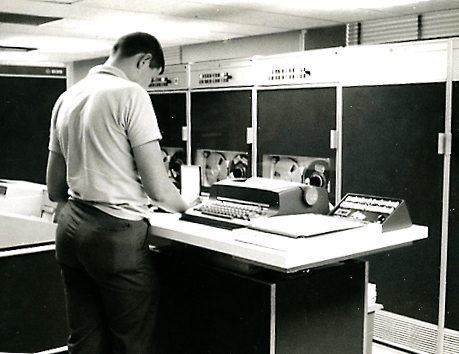

Loading
Paragraphs by THVV unless noted. Sections marked "xx" need to be improved.
Summary
In 1965, Multics was designed to run on a promised computer, a General Electric 645, as described in System Design of a Computer for Time-Sharing Applications, E. L. Glaser, J. F. Couleur, and G. A. Oliver. This machine was to be an enhanced version of the GE-635 mainframe computer. Project MAC's contract with GE for a GE-645 was signed in August 1964. Bell Labs (BTL) signed a contract for a 645 shortly thereafter. Prototype GE-645 systems were delivered to MIT and Bell Labs in January 1967. About 50 programmers at MIT, GE, and Bell Labs worked on the Multics software starting in 1965. Until the GE-645 machines were operational, Multics programmers used MIT's CTSS time-sharing system for program editing and compilation, and tested programs on a software simulator for the 645 running on a GE-635 computer system.
This note describes the tasks Multics developers worked on in the mid 60s and how they used the GE-635 to build Multics.
Timeline: GE-635 Use at MIT and BTL in the 60s
| TYPE | YEAR | LSTYLE | HEIGHT | TEXT | TSTYLE |
|---|---|---|---|---|---|
| back | 1965/08 | #dddddd | 1967 | CTSS+GE-635 | |
| back | 1967 | #ffdddd | 1969 | CTSS+GE-645 | |
| back | 1969 | #ffddff | 1970 | GE-645 | |
| axis | 1964 | ||||
| axis | 1965 | ||||
| axis | 1966 | ||||
| axis | 1967 | ||||
| axis | 1968 | ||||
| axis | 1969 | ||||
| axis | 1970 | ||||
| data | 1964/08 | 1 | GE Contract | ||
| data | 1964/11 | 2 | BTL joins | ||
| data | 1965/11 | 1 | FJCC | ||
| data | 1965/08 | 2 | GE 635|delivered | ||
| data | 1966/03 | 2 | EPL | ||
| data | 1967/01 | 1 | GE 645|delivered | ||
| data | 1967/11 | 2 | Phase one|boot | ||
| data | 1968/06 | 1 | start v1pl1 | ||
| data | 1968/11 | 2 | ARPA review|Self hosting | ||
| data | 1969/03 | 1 | BTL quits | ||
| data | 1969/09 | 2 | Multics|Service at MIT |
The GE-635
The GE-635 was designed by the late John Couleur of General Electric in 1963, and announced by GE as a product in 1965. The first prototype of the GE-635 shipped in April 1965. It was a competitor to IBM's 7094: same 36-bit word length, approximately the same speed (500 KIPS) and price. The story at the time was that GE decided to build its own computer because it was cheaper than renting 7094s from IBM. The GE-635 and GE-645 computers used discrete transistors on printed circuit boards, and had very large wire-wrap backplanes. Main storage was core memory: initially 2 microsecond core. The GE-635 ran GE's GECOS batch processing operating system.
When GE was chosen as the computer hardware supplier for Project MAC, GE planned to deliver newly designed GE-645 computers to BTL and MIT in 1967. Hardware design of the GE-645 began in 1964: the 645 would be a GE-635 upgraded with new addressing logic in the CPU, a new high speed drum, and a new I/O controller. The 645 used the same memories, memory controllers, and peripheral devices as the 635. One reason that Project MAC chose the 645 design was that the 635 supported multiple CPUs, and Multics planned to support symmetric multiprocessing.
GE announced the 645 to the public in Fall 1965, and withdrew it from marketing in 1966 partly because Multics was not available yet. (GE was also having troubles on the 635 with GECOS performance, tape system reliability, and general system reliability.)
While the new GE-645 hardware was being designed, debugged, and built,
the plan was for programmers at MIT, BTL, and GE to use MIT's CTSS system (See  "The IBM 7094 and CTSS")
to write and compile programs, and to test these programs using a GE-supplied GE-645 simulator that ran on a GE-635.
This system was referred to as the "6.36" because it might be 100x slower than the real computer.
(At GE, the initial name of the new machine was "636" instead of "645.")
"The IBM 7094 and CTSS")
to write and compile programs, and to test these programs using a GE-supplied GE-645 simulator that ran on a GE-635.
This system was referred to as the "6.36" because it might be 100x slower than the real computer.
(At GE, the initial name of the new machine was "636" instead of "645.")

GE-635 at MIT Project MAC, 22 Jul 1966. I think this is John Waclawski. [CSAIL]
Using the GE-635
Project MAC got its GE-635 in August 1965 to run the 645 Simulator and debug Multics. Bell Labs also got a 635 at that time. (I am not sure exactly when the 6.36 simulator was available.) MIT's 635 was installed in the 9th floor computer room at Tech Square, next to the IBM 7094 running CTSS. MIT, BTL, and GE programmers were given access to a CTSS command (MRGEDT) that could send GECOS batch runs to the GE-635 and test and debug 645 programs. (GECOS is described in MSPM BE.5.01, Introduction to GECOS MSPM BE.5.01, Introduction to GECOS)
Computer Languages for Multics: PL/I, EPL, EPLBSA
The Multics design was that all but the most primitive components of the operating system would be written in the PL/I language. BTL subcontracted development of a PL/I compiler to Digitek, but they failed to produce a usable compiler. In mid 1966, Bob Morris and Doug McIlroy of BTL created a compiler for a language called Early PL/I (EPL) written in Bob McClure's TMG language, for CTSS, and programmers began trying to compile their PL/I code on CTSS with EPL.
A simple assembler called EPLBSA (EPL Bootstrap Assembler) was written in FORTRAN by MIT Prof. Bill Poduska for Multics. EPL compiled into EPLBSA, and low-level language and hardware support programs were written in EPLBSA.
Using CTSS for Multics Development
Working Together
All members of the development team received project memos such as Multics Checkout Bulletins and updates to the MSPM. All developers were encouraged to review every document and to provide comments and suggestions to document authors. Individual product features tended to be done by groups that were geographically close; for example, the I/O system was done by Bell Labs people. Some projects moved from one organization to another as they evolved. Many projects depended on other projects, and so there was much communication between individual programmers trying to decide how things should work and details of interfaces. Being all in the same time zone helped.
Project MAC, GE, and BTL Multics developers all had accounts on Project MAC's CTSS system on projects named T234 and T288. MIT and GE programmers accessed CTSS by dialing their computer terminal modems through MIT's "data PBX". Bell Labs programmers used terminals that could dial long distance into the MIT phone exchange and access CTSS.
Each programmer on the Multics team had a personal account identified by CTSS project name and programmer number: for example, I logged into CTSS with LOGIN T234 VANVLECK and my home directory was T0234 2962. Using these account numbers, users could use the CTSS MAIL command to send messages to other users' MAIL BOX files, and could use the WRITE feature of the program . SAVED to send inter-terminal messages to other logged in CTSS users.
Project MAC and GE people often met in person -- the offices were two flights of stairs apart in Tech Square, and the weekly staff meetings were held in the 5th floor conference room and attended by both MAC and GE people.
Communication between the BTL folks in Murray Hill, Whippany, and Holmdel, New Jersey and MAC/GE people in Cambridge, Massachusetts was harder. The leadership took many trips for meetings; in those days there were "Newark Shuttle" flights from Boston to Newark Airport. Some programmers made occasional visits for meetings or hardware access. Story: Low Bottle Pressure.
Each staff member had an office phone, and we used them for a lot of communication. There were telephone tie lines between the MIT, GE, and BTL phone systems, and there was never any problem calling between offices. Some of these calls went on for a long time. I can remember Joe Osanna calling me from Murray Hill about some technical issues. He was well known for hours-long phone calls: sometimes I'd say "I have to go now," and he'd continue saying "Yes, but what about..." A more senior staff member advised me that when this happened, it was OK to just hang up, Joe wouldn't mind, and would call again later.
Editing PL/I programs on CTSS
Multics chose to use the ASCII character set, 7 bits right aligned in a 9-bit byte. See MSPM BC.2.01, Character Set MSPM BC.2.01, Character Set.
The CTSS native character set was 6-bit IBM BCD. Jerry Saltzer had written a popular CTSS editor called EDL; he recompiled it with a 9-bit ASCII library to become EDA MSPM BE.5.07, ASCII-Format File Editor (EDA) MSPM BE.5.07, ASCII-Format File Editor (EDA). Programmers could edit their ASCII source code with EDA and print them with PRINTA (MSPM BE.5.10, Print an ASCII File on the User's Console: PRINTA SAVED MSPM BE.5.10, Print an ASCII File on the User's Console: PRINTA SAVED) or P. File and directory names in CTSS had names of two 6-character BCD strings. By convention, ASCII files produced by EDA had the second name EPL.
Ken Thompson wrote a text editor for CTSS called QED (descended from the QED editor on the Berkeley time-sharing system). He enhanced it with the ability to read and write ASCII EPL files. This powerful editor could handle multiple buffers and execute editor macros.
Compiling PL/I programs on CTSS
EPL compilation on CTSS was painfully slow. (MSPM BE.5.08, Use of the EPL Compiler in CTSS MSPM BE.5.08, Use of the EPL Compiler in CTSS) A 100-line program might take hours to compile. Programmers might compile little programs on CTSS to see if their syntax was OK, but for compilation of Multics source, we mostly used batch runs on the GE-635.
Submitting a batch run from CTSS to the GE-635
The CTSS command MRGEDT was the "merge editor." See MSPM BE.5.02, Merge-editor MSPM BE.5.02, Merge-editor. It generated a GECOS batch job to run on the GE-635. MRGEDT read control files which said "compile program X, compile program Y, use previously compiled program Z, link the binary files, run the programs under the 645 simulator, take a core dump if it fails, and fetch (return) the compiled files, core dump, and output" and expanded its input into huge virtual card decks of GECOS control cards and input files. MRGEDT understood dependencies, so if one step depended on another it would order the steps correctly. Once the GECOS control cards for the batch job were generated, MRGEDT would queue for access to the special CTSS tape drive reserved for MRGEDT usage, tell the operator to mount a scratch tape (with special labeling, see below), and then write out a batch job to tape for input to the GECOS Input Media Conversion (IMCV) facility on the GE-635.
CTSS would write and dismount the tape and print a message on the CTSS online printer, and the 7094 operator would carry the tape across the floor to the GE-635 input job queue. (I can't remember what this queue looked like: perhaps it was a wire rack that held 5 or 6 tapes, each in their plastic canisters.)
Don Wagner recalls that MRGEDT was designed by Bob Fenichel and written by Steve Kidd. (Fenichel can't remember anything about the details. (email March 2022)) Brian Kernighan and Noel Morris worked on MRGEDT. (Source code for MRGEDT and the other early development tools is long gone.)
There was a PL/I preprocessor called EPLMAC ... it expanded %INCLUDE macros. It was automatically invoked by the EPL compiler. See MSPM BE.1.02, Processing EPL "macros" with EPLMAC MSPM BE.1.02, Processing EPL "macros" with EPLMAC.
Sections of the Multics System Programmer's Manual about GE-635 usage
- MSPM BE.1.01, Use of the EPL Compiler in CTSS MSPM BE.1.01, Use of the EPL Compiler in CTSS
- MSPM BE.3, 645 Segment Dump MSPM BE.3, 645 Segment Dump
- MSPM BE.5.00, Overview of the 6.36 System MSPM BE.5.00, Overview of the 6.36 System
- MSPM BE.6.00, Overview of the 64.5 System MSPM BE.6.00, Overview of the 64.5 System
- MSPM BE.7.00, Overview of the pre-Multics System MSPM BE.7.00, Overview of the pre-Multics System
- MSPM BE.8.00, Overiew of the Pseudo-supervisor MSPM BE.8.00, Overiew of the Pseudo-supervisor
- MSPM BE.9, Use of the Multics Linker (link_fault): ft2ft3, setft3, f3catc MSPM BE.9, Use of the Multics Linker (link_fault): ft2ft3, setft3, f3catc
- MSPM BE.10.00, The Elementary File System (EFS) MSPM BE.10.00, The Elementary File System (EFS)
- MSPM BE.11.00, On-Line Character Stream Input/Output for Interaction with Simulated 645 Programs MSPM BE.11.00, On-Line Character Stream Input/Output for Interaction with Simulated 645 Programs
- MSPM BE.12.01, Trace and Dump for EPL procedure debugging in the 645 simulator environment MSPM BE.12.01, Trace and Dump for EPL procedure debugging in the 645 simulator environment
- MSPM BE.12.02, Strace: A subroutine tracing procedure for 6.36 MSPM BE.12.02, Strace: A subroutine tracing procedure for 6.36
- MSPM BE.12.03, Stack Dumping in the 64.5 Pseudo-process <stack_dump> MSPM BE.12.03, Stack Dumping in the 64.5 Pseudo-process <stack_dump>
- MSPM BE.13, GE 645 Core Memory X-Ray Program MSPM BE.13, GE 645 Core Memory X-Ray Program
- MSPM BE.15.02, Multics System Tape Generator MSPM BE.15.02, Multics System Tape Generator
- MSPM BE.16, Use of the Binder under 6.36 MSPM BE.16, Use of the Binder under 6.36
- MSPM BE.17.01, A User's Manual for the (Interim) Tape System Process MSPM BE.17.01, A User's Manual for the (Interim) Tape System Process
- MSPM BE.18.00, The merge_edit command MSPM BE.18.00, The merge_edit command
Running IMCV Jobs on the 635
The GE-635 operator would run GECOS batch jobs from IMCV tapes generated by MRGEDT. The 635 had no hard disk; each input tape contained images of binary programs to be run. Each job would produce printed output and write a "return tape" with a core dump and compiled 645 binary files. I think each batch job also produced line printer output on the 635 with compilation listings and run messages, and this printed output was separated by job and filed for programmers. The 635 operators would bring the return tape to the CTSS operator to return run output and a core dump to the submitter's account via the CTSS Disk Editor.
Using the 6.36 Simulator
GE Engineering supplied a 6.36 simulator that ran on the GE-635, and simulated the GE-645 instruction set.
The GE-635, under control of the GECOS operating system, ran batch jobs that could invoke the 6.36 simulator to run programs. [See MSPM section BE.6 and BE.7 linked above]
Once the 6.36 and MRGEDT became serviceable, the EPL compiler and EPLBSA assembler were implemented on GECOS, which eliminated much waiting for slow CTSS compilations. MRGEDT added requests to its control language to compile EPL programs into EPLBSA and to assemble EPLBSA files to Multics format binaries. Text, link, and symbol files from EPLBSA on the 635 were returned to the job submitter via the return tapes.
[MDM] I have always been amused--and impressed--by how Clem Pease ported TMG, and hence EPL, to the 635. TMG compiled to code for an interpreter written in assembly language for the IBM 7094. Since both machines had the same word size, Clem was able to redefine the 7090 opcodes as macros for the 635. Many, such as ADD, carried over quite directly, but some expanded to as many as 20 instructions on the 635. We never quantified the overall performance hit, but it was certainly significant.
Bell Labs had a GE-635 too, and MIT and BTL operations had devices called an IBM 7711, which a tape drive and a high speed modem, connected by a high speed circuit between Cambridge and Murray Hill. BTL researchers could dial into CTSS from New Jersey, use a special argument to MRGEDT and have their tapes sent to the Bell machine room, run on the simulator there, and then send the return tape back to Cambridge for input into the 7094 so they could use the interactive debugger on CTSS. Complicated, but it worked.
Tape drive Compatibility between 7094 and GE-635
The tape drives used for IMCV on the GE-635 were some of the first self-threading drives. As a result they needed an extremely long tape leader, 150 feet, before the "reflector spot" and this was a pain for MIT operators when loading the tapes onto the 7094 running CTSS. Lee Varian wrote some tricky code, and we put two load point reflectors on the tapes we shuttled between the 7094 and the 635. The 635 would only sense the farther-in load point; the 7094 would load to the early load point and then Lee's code would space it way out and rewind back to the 635 load point. If we didn't find the right label, his code tried three times and then deliberately broke the tape so the operator would have to put on new load points at the correct places. (You could break a tape on the 94 by putting it into high speed rewind and then doing a reset data channel command.)
[JAB] The tape drives depicted in the photo are model GE 660. Instead of vacuum columns, the 1/2 inch tape was pulled into a "bin" by a vacuum capstan. There was a fluorescent light in the front of the bin and light sensors in the back. When the bin got full of tape, the photo cells would detect less light which would cause another vacuum capstan to pull the tape out to the take-up reel. It was a poor design. Sometimes the photo sensor would fail generating a "bin empty" condition and the tape would keep being pulled in until eventually the bin would be completely packed and the tape crinkled ruining the tape. Also, if the light failed, this would generate a "bin full", which would cause the take-up reel to pull the tape out until it stretched and sometimes broke the tape. This brings back memories of when I was a H/W technician working on these beasts in the late 60s.
Offline Printing of ASCII Files from CTSS
Multics programmers generated ASCII files containing PL/I programs, and wanted to be able to print them on paper.
Tom Van Vleck wrote the IBM 1401 program ASCPT to run on the MAC 1401.
It read "Multics format" tapes containing ASCII, converted them to BCD with a 7th bit indicated by a word mark,
and invoked a 1404 special feature to print using a special upper and lower case print chain on the 1403 printer.
Noel Morris and Tom Van Vleck created a clone of the CTSS disk editor which could print ASCII files from CTSS.
Multics programmers requested these printouts using a special CTSS command, RQASCI
(described in MSPM section MSPM BE.5.11, RQASCI: Request off-line printing of ASCII files
MSPM BE.5.11, RQASCI: Request off-line printing of ASCII files).
CTSS access to this facility was limited to Multics programmers on project T234 by CTSS permissions.
 PSN-68 A Full-character-set Modification to the 1401
PSN-68 A Full-character-set Modification to the 1401
Other CTSS tools
Tom Van Vleck and Don Widrig wrote a CTSS tool, PRLNK, that could examine text and link files and print segment names, external references, and entry point names. It is described in MSPM BE.5.14, Print out links in text and link file: PRLNK SAVED MSPM BE.5.14, Print out links in text and link file: PRLNK SAVED.
CTSS Terminal Usage by MIT and GE Multicians
Project MAC members of the Multics team on the 5th floor of Tech Square and GE CISL people located on the 7th floor of Tech Square used the Project MAC CTSS located on the 9th floor of Tech Square. Story: Terminals.
GE members of the Multics team on the 7th floor of Tech Square dialed in to MIT's CTSS from their offices and home terminals. I forget whether they were connected to the MIT PBX or used the GE network. I don't remember if any management or engineering folks from GE Phoenix had CTSS accounts and terminals.
CTSS Terminal Usage by BTL Multicians
BTL members of the Multics team in Murray Hill, Holmdel, and Whippany NJ dialed in to MIT's CTSS from their offices and home terminals over the Bell network.
[BWK] There was a Bell Labs private line (OPX?) in the Engineering Quadrangle at Princeton that gave access to CTSS. It was sort of hidden behind a panel; pushing a secret button connected one of the IBM 1050s to the Labs and thence to MIT (I believe). I used to have to negotiate with Stu Feldman over who got to use it. He was a Princeton undergrad at the time, graduating in 1968. He worked on the design of the I/O system.
[SIF] The IBM 1050 terminal (a big box with lots of transistors and hidden capabilities, not the much simpler 2741 terminal) that Brian refers to was installed at the Princeton E-Quad in 1966 or 67 with a foreign exchange line to Murray Hill, so that I could participate in the Multics project, using the MIT CTSS system, while an undergraduate. It was installed for my use, but with an informal agreement that Princeton people (e.g., Ted Dolotta and Lee Varian) could play with it. It went into the computer center because my BTL supervisors were worried I'd spend too much time on the computer and flunk out of the university.
[SIF] The next year, they relented, so I and 2 friends merrily rolled said 200 pound machine through the streets of Princeton to my dorm room. It was later "upgraded" to a Model 37 teletype.
Documentation Usage
CTSS was too expensive to use for creating design documents and the Multics System Programmer's Manual. Draft design documents, for example MCBs, were typed on spirit duplicator masters and copies were distributed by secretarial staff. Final design documents were produced by the MIT reproduction service. Final MSPM sections were typed on Flexowriter paper tapes by a group at Project MAC and distributed by MIT repro services. The MIT group had an early Xerox machine: its use was limited and it was operated only by experts: it caught fire at least once.
Debugging on CTSS
[DBW] EPL was written in Bob McClure's TMG language; it first ran on CTSS. It produced an assembly-language file that was assembled by EPLBSA. EPLBSA was designed by Bill Poduska, written in Fortran IV. (Actually TMG was written in TMG, so it was only a small interpreter program that had to be written in Fortran IV).
[DBW] The 645 simulator ran under GECOS on the 635. I don't know who wrote it or when, but it functioned with no problems. I'm pretty sure it was still in use when I left in December 1967, though by that time we we had received the 645.
[DBW] MRGEDT ran on CTSS and prepared a GECOS job for the 635 to assemble EPLBSA programs and run the result on the simulator. What came back was (1) a pile of fanfold paper and (2) a file with a core dump from the simulator run.
[DBW] GEBUG was a program on CTSS to probe into that core dump, inspired by FAPDBG. It was the most important debugging tool for 645 programs.
[DBW] I was very new at MAC when I was given the responsibility to maintain GEBUG. MRGEDT too, but Corby was insistent that it should not be touched - he knew young programmers' tendency to spend a lot of time on unimportant details.
[DBW] My first tasks were (1) to learn MAD programming (I had four years' experience with assembly language programming on the 1620, 1401, and 7094, but virtually none with higher-level programs) and (2) write a GEBUG manual, which ended up in the MSPM: MSPM BE.5.06, GEBUG MSPM BE.5.06, GEBUG.
[DBW] Both programs were designed by Bob Fenichel and written by Steve Kidd. He wrote it for the "new file system", which had been installed a few months before I arrived on August 9, 1965. At the time it was not clear what was going to be fast or slow in the new system. It gave the possibility of reading and writing single words in an open file, and Steve used that a lot, but it turned out to be very slow.
[DBW] GEBUG had to be able to random-access single words in the core dump, so I wrote a kind of paging arrangement to read whole records and try to keep the right ones around in core. I was never satisfied with it, but it did improve the speed considerably.
[DBW] MRGEDT was the big problem, so slow that it was hampering people's work, but I was not allowed to touch it, and didn't really want to either, for it was a big complicated thing. But in the summer of 1966 a Canadian graduate student came for a summer job -- I don't remember his name, but he wore the iron ring that all Canadian engineering graduates (including my grandfather) wear. [Turns out this was Brian Kernighan -- thvv] Corby asked me to give him something to do, so I asked him to do something about the speed of MRGEDT. He increased the speed by a factor of 40, and completely changed the way we worked.
[BWK] I can add a handful of actual facts. The main one is that I worked on MRGEDT, writing code in MAD (which I liked a lot, especially compared to Fortran), but I have no memory whatsoever of what I actually did. I was a Princeton grad student doing an internship. I don't know who was my official boss, but either Corby or Ted Glaser, though I got most of my day to day advice from Noel Morris. Don Wagner credits me: I'm pretty sure I'm the forgotten Canadian grad student -- he was also from Canada and we used to have lunch almost every day, so we must have talked about what was going on.
[DBW] Those piles of fanfold paper were also important for debugging, and it was a problem in Murray Hill that they weren't getting them. So a Rube Goldberg arrangement [the IBM 7711, see above] was produced so that a tape mounted on a tape drive in Cambridge was copied over a telephone line to a tape drive in Murray Hill. It wasn't working well, and Corby asked me to find out what was wrong. I talked to the operator in Cambridge, and he convinced me that the problem was in Murray Hill. So I flew down to Murray Hill and the operator there was persuasive that the problem was in Cambridge. I didn't know what to do, but someone suggested that the two operators should meet in a bar in New York. I think something like that probably happened, because at some point the problems went away.
Transition to The GE-645
MIT and BTL received prototype GE-645 systems in January of 1967. These computers were compatible with the 635 and could run GECOS and the 6.36 simulator. While GE engineers debugged the prototype hardware, Multics development continued using the 6.36 simulator.
The GE-635 was removed from Project MAC in March 1967, but since Multics was not bootable on the 645 yet, development used the 645 in 635 mode under GECOS, running simulator jobs. A setup for replacing the 645 Simulator execution with actual 645 execution was available, called the "6.45" system. Development team members still depended on CTSS for file creating, editing, and storage. Compilation of PL/I programs was moved from CTSS to GECOS compilation on the 645 in 635 GECOS mode.
The way I remember it, the 645 tape drives came without the autoload feature and we were all glad.
According to Ken Pogran, Bell Labs had multiple GE-635 systems: two in Holmdel and at least one in Murray Hill. They may have kept their 645 and run it in 635 mode.
xxx 64.5 system
Pre-Multics system ... read MSPM sections
Pseudo-supervisor, Pseudo-file-system
Bootload simulator
There was a time when we ran GECOS on the 645, and had a sort of "free run" simulator that actually used the real 645. The idea was to run both ways and compare results. As I remember this was used for a few months in 1967.
Multics Development Milestones
Multics project milestones were defined in the Multics Planning Notebook (MPN). Each milestone was described as a functional benchmark script, describing a sequence of operations and the expected results.
Multics Development Milestones on the GE-635
MPN Milestone "Phase .5" was defined as execution of the Multics file system under the 6.36 simulator. It wa accomplished in July 1967.
Booting Multics on the GE-645
The design of system initialization and bootload was started by André Bensoussan of GE.
- MSPM BC.4.01, System Initialization and Bootload MSPM BC.4.01, System Initialization and Bootload
- MSPM BL.4.00, Bootstrap Initializer -- Overview MSPM BL.4.00, Bootstrap Initializer -- Overview
- MSPM BL.4.01, Bootstrap 1 MSPM BL.4.01, Bootstrap 1
- MSPM BL.4.02, Bootstrap 2 MSPM BL.4.02, Bootstrap 2
One of the first projects to be done on the bare 645 was debugging the system tape generation and bootstrap. Nguyen Van Binh of GE started this project: when he returned to France, Noel Morris and Tom Van Vleck took over the project.
Phase One Milestone
MPN Milestone "Phase One" was accomplished on the bare 645 in December 1967. This milestone required that the system bootload on the 645, establish virtual addressing, segmentation, and paging, ability to map file system files into virtual memory, and shut down. Multics boots by turning the initial environment into what appears to be a single process, and that was the process demonstrated in Phase 1.
Multi-Process Milestone
MPN Milestone "A3" required booting Multics on the GE-645 and running three processes. It was accomplished in March 1968.
Demonstrable System and Limited System
MPN Milestone "Demonstrable Initial Multics" was accomplished on the GE-645 in October 1968. This milestone included booting Multics on a 645, logging in 8 users, and having them all use Multics commands, and then shutting down in an orderly way. There was a later milestone called "Limited Initial Multics" which I think required that the system stay up without crashing for a defined length of time. Not sure exactly when we accomplished this one.
Transition to Self-Hosted Development on the 645
By December 1968, Multics was self-hosting on the MIT 645: that is, Multics could be used for the storage of system source and object files, file creation and editing, and program compilation, execution and testing. Scheduled "console sessions" were provided for Multics developers to use the system. System capacity, performance, and reliability were major concerns.
The system developers at MIT, GE, and BTL worked long hours trying to improve Multics. Every component described in the MSPM was redesigned, simplified, and reimplemented. Story: How Many Users?.
By the end of 1968, Multics development was using the MIT 645 as a timesharing service, and CTSS usage by Multicians was phasing out. (The red 7094 was moved from Tech Square to the new MIT Building 39, and the blue 7094 was returned to IBM.) See MAC-A-268.
Ed Meyer created a Multics command merge_edit described in MSPM BE.18.00, The merge_edit command MSPM BE.18.00, The merge_edit command that enabled users of Multics to generate IMCV tapes for 635 GECOS.
The initial Multics service for developers slowed way down if too many people tried to compile EPL programs on Multics at the same time. Nate Adelman of GE set up an EPL daemon that selected a program to compile from a queue, and programmers were given a command, (forget its name), that queued a request to compile. This was much more efficient: programmers were not sitting waiting for their compile to finish, or hitting QUIT and typing start to get better scheduler treatment. The 645 could compile one or two EPL programs rapidly without thrashing and people got more work done.
The GE-645 was connected to the MIT PBX with different "hunt group" numbers, and MIT and GE personnel used the 645 from their offices and home terminals. Multics system tapes for booting the 645 were generated on the 645: there was even a program called the MST Checker (MSPM BV.4, MST Checker MSPM BV.4, MST Checker) that examined a newly made MST to be sure that it would not crash with a linkage error when booted.
Jerry Grochow's operational statistics for Multics in early 1969 and late 1969 show gradual improvement. System crashes happened multiple times a day. Much of the downtime was caused by hardware problems.
Multics Availability to MIT users
BTL dropped out of the Multics project in April 1969. MIT invited selected non-development users to use Multics on the GE-645 in July 1969. MIT began providing service to regular academic users on the GE-645 in October 1969.
Begun 10 Feb 2022 by THVV.
On 27 Feb 2022, Don Wagner sent mail included above.
On 08 Mar 2022, Doug McIlroy sent mail included above.
On 08 Mar 2022, Jerry Saltzer sent mail with corrections.
On 09 Mar 2022, Brian Kernighan sent mail included above.
On 09 Mar 2022, Stu Feldman sent mail included above.